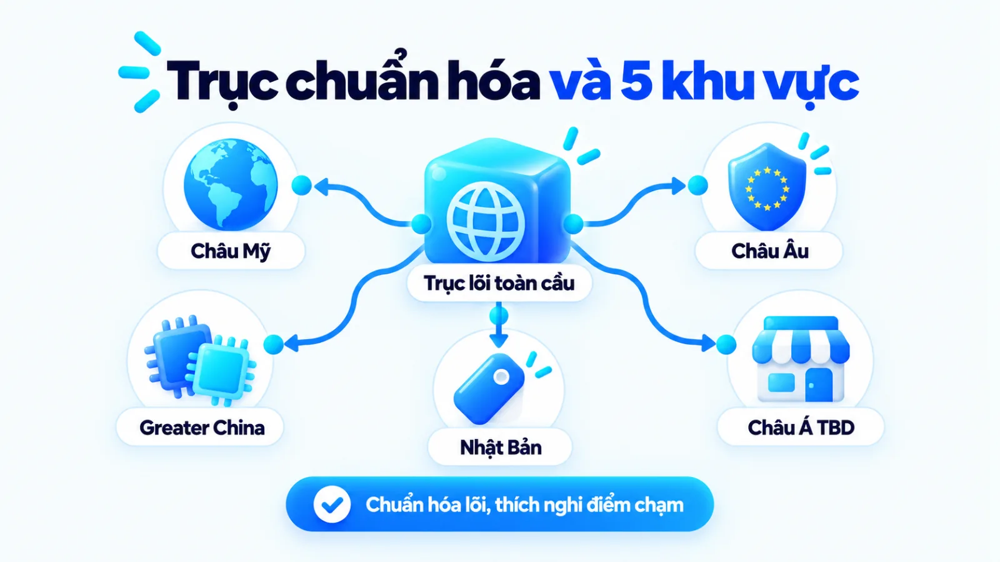
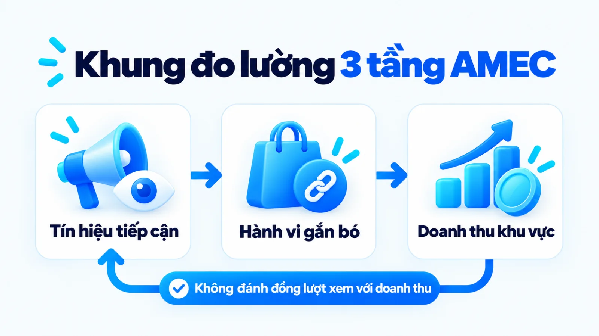
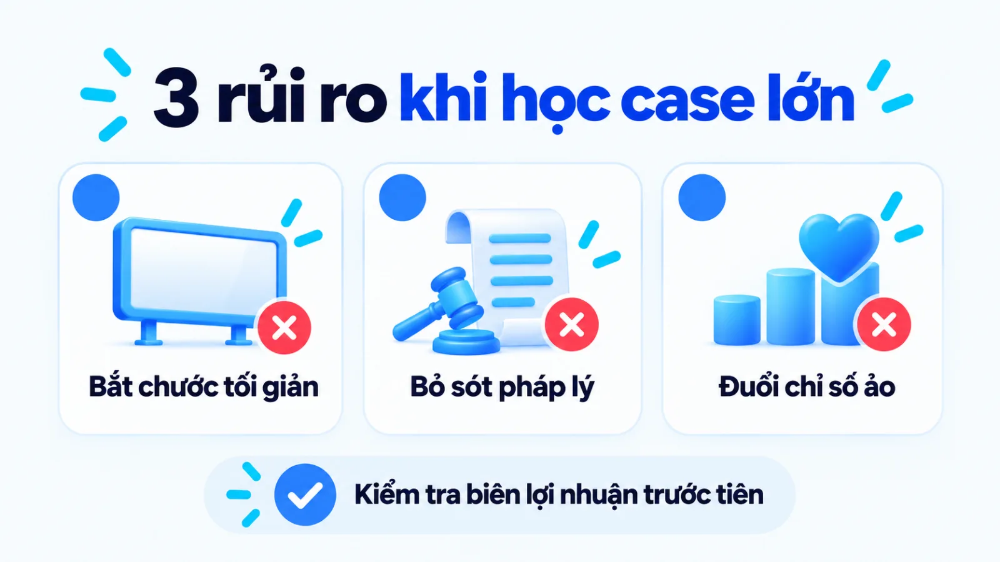

Chiến lược marketing quốc tế của Apple cho SME
Chiến lược marketing quốc tế của Apple là mô hình kết hợp tiêu chuẩn hóa định vị cao cấp, sản phẩm cốt lõi và hệ sinh thái toàn cầu với việc thích nghi có chọn lọc về phân phối, thanh toán và pháp lý tại từng quốc gia. Khi nhìn vào diện mạo đồng nhất của hãng, nhiều người dễ lầm tưởng mở rộng thị trường là nhân bản một công thức giống hệt ở mọi nơi hoặc phải sửa toàn bộ sản phẩm theo thị hiếu bản địa. Với doanh nghiệp vừa và nhỏ, nếu không tách rõ phần hạt nhân cố định và điểm chạm linh hoạt, chi phí vận hành tại vùng mới sẽ sớm vượt quá biên lợi nhuận. Tôi là Lê Tuấn Việt, Marketing Leader tại TAKI Group. Trong bài viết này, tôi làm rõ ranh giới giữa phần giữ chuẩn và phần điều chỉnh từ dữ kiện công khai của Apple, cách đọc hiệu quả theo tầng dữ liệu và tiêu chí chọn điểm chạm vừa sức doanh nghiệp nhỏ.
- Đăng ngày
- Cập nhật

Tóm tắt nhanh
- Apple giữ cố định nhận diện thương hiệu cao cấp, kiến trúc hệ sinh thái và nguyên tắc truyền thông xoay quanh trải nghiệm để bảo toàn lợi thế quy mô lớn.
- Sự thích nghi tại từng quốc gia chỉ kích hoạt khi gặp rào cản pháp lý bắt buộc, hạ tầng viễn thông đặc thù hoặc ma sát thanh toán tại điểm bán lẻ.
- Nhiều thay đổi lớn như mở chợ ứng dụng thay thế tại Liên minh Châu Âu là phản ứng tuân thủ pháp luật để giữ quyền kinh doanh, không phải tiếp thị tự nguyện.
- Doanh nghiệp vừa và nhỏ nên chuẩn hóa lời hứa giá trị cốt lõi trước, sau đó thử nghiệm thích nghi kênh bán trực tuyến và hậu mãi với chi phí kiểm soát được.
Mục lục bài viết9 phần
Chiến lược marketing quốc tế của Apple là gì?
Chiến lược marketing quốc tế của Apple là mô hình kết hợp tiêu chuẩn hóa nhận diện cao cấp, kiến trúc sản phẩm cốt lõi và trải nghiệm hệ sinh thái trên toàn cầu với việc thích nghi có chọn lọc về kênh phân phối, thanh toán, thông điệp văn hóa và tuân thủ pháp lý tại từng khu vực. Cách tiếp cận này giúp hãng bảo toàn vị thế thương hiệu đồng nhất trong khi vẫn tháo gỡ được rào cản giao dịch tại địa phương.
Hồ sơ dữ kiện công khai từ Apple Inc. và Ủy ban Châu Âu
Cấu trúc vận hành đa khu vực và các điểm thích nghi đã xác minh
Theo báo cáo tài chính năm 2025 do Apple Inc. tự công bố (kết thúc ngày 27/09/2025), hãng chia doanh thu quốc tế thành 5 phân khúc: Châu Mỹ, Châu Âu, Greater China (Trung Quốc đại lục, Hồng Kông, Đài Loan), Nhật Bản và Phần còn lại của Châu Á Thái Bình Dương. Dù installed base (lượng thiết bị đang hoạt động) đạt kỷ lục mới ở mọi phân khúc, hãng vẫn phải điều chỉnh kỹ thuật và phân phối tại từng lãnh thổ.
- 5 khu vực
- Phân khúc báo cáo quốc tế
- 600 API
- Mở thêm riêng tại khối EU
- 2 nano-SIM
- Bản riêng vùng Trung Quốc

Marketing quốc tế khác toàn cầu và nội địa thế nào?
Khi bước ra khỏi biên giới quốc gia, nhiều đội ngũ thường dùng lẫn lộn khái niệm International marketing (marketing quốc tế) với Global marketing (marketing toàn cầu) và Domestic marketing (marketing nội địa). Trong bài nghiên cứu kinh điển năm 1983 trên Harvard Business Review, Giáo sư Theodore Levitt đã chỉ ra sự khác biệt cốt lõi giữa công ty đa quốc gia điều chỉnh theo từng nước với chi phí cao và tập đoàn toàn cầu vận hành nhất quán để tối ưu lợi thế quy mô.
Trên thực tế, cách vận hành của Apple là sự giao thoa theo hướng Glocalization (toàn cầu hóa kết hợp bản địa hóa). Trước khi đi sâu vào chiến lược marketing của Apple, bảng dưới đây đặt cạnh phạm vi một quốc gia (nội địa) và mô hình trao quyền sửa lớn theo từng nước (quốc tế) ở cột hai để đối chiếu với chuẩn hóa toàn cầu ở cột ba theo ba tiêu chí.
| Tiêu chí | Nội địa và quốc tế | Toàn cầu và mô hình lai |
|---|---|---|
| Phạm vi | Nội địa xét một nước; quốc tế trao quyền sửa lớn cho từng vùng | Khóa chặt trục định vị tại trụ sở, chỉ mở linh hoạt ở điểm bán |
| Mức điều chỉnh | Thay đổi sâu danh mục hàng, thông điệp và giá theo từng vùng | Chuẩn hóa tối đa phần cứng; chỉ sửa khi gặp rào cản pháp lý |
| Đầu ra | Sát văn hóa bản địa nhưng chi phí nghiên cứu, sản xuất bị đội | Giữ lợi thế chi phí theo quy mô và gỡ ma sát mua hàng tại chỗ |
Khi đọc bảng phân biệt trên, cần lưu ý không có tập đoàn nào thuần túy đứng ở một cực tuyệt đối. Ngay cả doanh nghiệp theo đuổi chuẩn hóa toàn cầu vẫn phải tuân thủ luật bảo vệ người tiêu dùng, tiêu chuẩn tần số viễn thông và hệ thống thuế tại từng quốc gia sở tại.
Vai trò của tiêu chuẩn hóa và thích nghi địa phương
Điểm tôi muốn làm rõ là tiêu chuẩn hóa và thích nghi không phải hai lựa chọn loại trừ nhau, mà đảm nhận hai chức năng khác nhau trong cùng một phễu thương mại. Tiêu chuẩn hóa giúp bảo vệ lý do khách hàng khao khát sở hữu thương hiệu, còn thích nghi địa phương có nhiệm vụ tháo gỡ những rào cản về thanh toán, hạ tầng viễn thông hoặc pháp lý đang ngăn khách hàng hoàn tất giao dịch tại nước đó.
Apple tiêu chuẩn hóa yếu tố nào trên quốc tế?
Trên mọi thị trường quốc tế, Apple tiêu chuẩn hóa ba trụ cột cốt lõi gồm định vị tối giản cao cấp, kiến trúc hệ sinh thái phần cứng gắn kết dịch vụ và nguyên tắc truyền thông xoay quanh trải nghiệm người dùng. Ba trụ cột hạt nhân được hãng giữ thống nhất trên toàn cầu gồm:
- Nhận diện cao cấp: Duy trì thống nhất ngôn ngữ thiết kế tối giản, chuẩn trưng bày và hạn chế giảm giá.
- Hệ sinh thái khép kín: Đồng bộ phần cứng chủ lực với iOS, macOS và dịch vụ lưu trữ để giữ chân khách hàng.
- Truyền thông trọng tâm trải nghiệm: Kể chuyện xoay quanh khả năng sáng tạo của con người thay vì sa đà vào cuộc đua so kè thông số kỹ thuật khô khan trên mặt giấy.
Nhận diện và định vị thương hiệu
Tại mọi điểm chạm từ không gian bán lẻ đến giao tiếp xã hội hàng ngày, ngôn ngữ thiết kế công nghiệp tối giản biến chiếc điện thoại hay máy tính thành dấu hiệu nhận diện nhìn thấy ngay mà không phải định vị lại phân khúc cho từng nước. Cách giữ chuẩn nhận diện thị giác và cảm xúc cốt lõi trên phạm vi đa quốc gia này cũng là nguyên lý nền tảng từng xuất hiện trong bài phân tích chiến lược marketing của Coca Cola, dù hai hãng thuộc hai ngành hàng có chu kỳ mua khác nhau.
Hệ sinh thái sản phẩm và trải nghiệm
Cơ chế giữ chân toàn cầu của hãng nằm ở chi phí chuyển đổi hệ sinh thái: khi dữ liệu ảnh, danh bạ, thiết bị đeo tay và máy tính đều đồng bộ mượt mà qua một tài khoản duy nhất, người dùng ở bất kỳ quốc gia nào cũng có xu hướng tiếp tục nâng cấp thiết bị mới bên trong hệ sinh thái đó. Tuy vậy, cần nhìn nhận giới hạn rằng cấu trúc khóa chặt này chỉ phát huy tác dụng khi sản phẩm đầu phễu đã đủ sức hút và thị trường chưa có quy định pháp lý ép buộc mở cổng kết nối cho bên ngoài.
Nguyên tắc truyền thông cốt lõi
Trong truyền thông quốc tế, hãng giữ nguyên tắc đặt sản phẩm ở vị trí công cụ hỗ trợ con người giải quyết công việc hoặc thể hiện cá tính. Thay vì đọc một danh sách thông số vi xử lý khô khan, các chiến dịch toàn cầu luôn cho người xem thấy trực tiếp bức ảnh hoặc thước phim thành phẩm sắc nét, qua đó vượt qua rào cản ngôn ngữ kỹ thuật ở nhiều thị trường mới.
Apple thích nghi theo từng thị trường ra sao?
Apple thích nghi chiến lược marketing theo từng thị trường khi gặp rào cản pháp lý bắt buộc, hạ tầng viễn thông đặc thù hoặc ma sát thanh toán địa phương. Các điều chỉnh này tập trung tháo gỡ điểm nghẽn giao dịch tại chỗ thông qua ba hạng mục đối chiếu trong bảng dưới đây.
| Hạng mục | Phần giữ tiêu chuẩn hóa | Phần thích nghi bản địa |
|---|---|---|
| Sản phẩm | Thiết kế công nghiệp, chip xử lý, hệ điều hành và độ hoàn thiện | Khay 2 nano-SIM tại Trung Quốc; mở 600 API và chợ phụ tại EU |
| Giá và kênh | Định vị phân khúc cao cấp, chuẩn đại lý và trải nghiệm mở hộp | Thu cũ đổi mới, trả góp nội địa và mở cửa hàng trực tuyến vùng |
| Truyền thông | Tông giọng tối giản, nhấn mạnh lợi ích camera, bảo mật, độ bền | Phim ngắn dịp lễ hội bản địa và tư vấn bằng ngôn ngữ sở tại |
Giới hạn cần nhớ khi đọc bảng trên là không phải mọi sự thích nghi đều xuất phát từ sự thấu hiểu khách hàng tự nguyện; phần lớn thay đổi chạm vào kiến trúc phần cứng hoặc hệ điều hành đều là phản ứng bắt buộc trước quy định của cơ quan quản lý.
Sản phẩm và dịch vụ theo yêu cầu thị trường
Ở cấp độ phần cứng, trong khi các mẫu máy bán tại Mỹ đã chuyển hoàn toàn sang eSIM (SIM điện tử tích hợp), tài liệu kỹ thuật cập nhật năm 2024 của Apple Support xác nhận một số mẫu iPhone phân phối tại Trung Quốc đại lục, Hồng Kông và Ma Cao vẫn được trang bị khay Dual SIM với hai thẻ nano-SIM vật lý. Điều chỉnh này giải quyết trực tiếp thói quen sử dụng song song nhiều số điện thoại di động và quy định quản lý định danh viễn thông của các nhà mạng tại vùng đó.
Ở cấp độ phần mềm, sự thích nghi diễn ra dưới sức ép pháp lý trực tiếp. Theo văn bản chính sách năm 2024 của Ủy ban Châu Âu về Đạo luật Thị trường Kỹ thuật số (DMA, tức Digital Markets Act), các nền tảng kỹ thuật số lớn được chỉ định là gatekeeper (nền tảng gác cổng) phải đảm bảo khả năng tương tác và cho phép người dùng cài đặt ứng dụng từ bên thứ ba.
Theo thông cáo chính thức ngày 25/01/2024 do Apple Inc. công bố, để tuân thủ đạo luật này tại 27 quốc gia thành viên, hãng đã điều chỉnh iOS, trình duyệt Safari và App Store từ bản iOS 17.4 (tháng 03/2024), bổ sung hơn 600 API (Application Programming Interface, tức giao diện lập trình ứng dụng) mới cùng tùy chọn chợ ứng dụng và cổng thanh toán thay thế riêng cho khối Liên minh Châu Âu.
Tương tự, quy định bộ sạc chung của Ủy ban Châu Âu có hiệu lực từ ngày 28/12/2024 theo Chỉ thị (EU) 2022/2380 đã bắt buộc mọi điện thoại di động, máy tính bảng và máy ảnh bán mới tại EU phải trang bị cổng sạc USB Type-C. Như vậy, việc chuyển đổi cổng kết nối hay mở hệ điều hành tại Châu Âu là điều kiện pháp lý bắt buộc để duy trì quyền tiếp cận thị trường, không phải chiến dịch chiều lòng người dùng lẻ.
Giá và kênh phân phối theo sức mua
Tại các thị trường đang phát triển có mức thu nhập bình quân khác biệt lớn so với Bắc Mỹ hay Tây Âu, rào cản lớn nhất với người mua không phải là sự yêu thích thương hiệu mà là khả năng chi trả một lần cho thiết bị cao cấp. Thay vì phá vỡ cấu trúc giá toàn cầu bằng cách tung các đợt siêu giảm giá như cách nhiều nhà bán hàng áp dụng trong chiến lược Digital Marketing của Shopee, Apple chọn cách thích nghi kênh phân phối và giải pháp tài chính tại điểm bán.
Cụ thể, thông tin công bố trên Apple Store trực tuyến tại Việt Nam (ra mắt từ tháng 05/2023) cho thấy hãng triển khai giao diện tiếng Việt hoàn chỉnh, đội ngũ chuyên gia tư vấn trực tiếp bằng tiếng Việt, dịch vụ khắc biểu tượng miễn phí và chương trình Apple Trade In (đổi thiết bị cũ lấy khoản tín dụng mua máy mới). Kết hợp với hệ thống đại lý ủy quyền và gói trả góp linh hoạt tại chỗ, hãng hạ thấp số tiền khách phải thanh toán ban đầu mà vẫn giữ nguyên giá niêm yết của dòng chủ lực.
Thông điệp theo văn hóa và quy định địa phương
Các chiến dịch khu vực như phim ngắn dịp Tết Nguyên đán tại Châu Á chỉ bản địa hóa lớp vỏ câu chuyện văn hóa, trong khi thiết bị vẫn đóng đúng vai trò công cụ ghi hình theo chuẩn toàn cầu. Vì không có dữ liệu công khai chính thức từ Apple về ROAS (Return on Ad Spend, tức tỷ suất lợi nhuận trên chi phí quảng cáo) hay doanh số trực tiếp của từng phim ngắn lễ hội, người làm marketing tuyệt đối không quy kết toàn bộ doanh thu khu vực cho một video quảng cáo lẻ.
Cách đo chiến lược marketing quốc tế của Apple
Cách đo chiến lược marketing quốc tế của Apple cần được thực hiện qua khung ba tầng tách bạch gồm tín hiệu tiếp cận truyền thông, hành vi mua và gắn bó trong hệ sinh thái, cùng kết quả doanh thu theo từng phân khúc khu vực địa lý. Việc tách tầng giúp người làm nghề không nhầm lẫn độ ồn truyền thông với hiệu quả tài chính.
Tín hiệu tiếp cận và tương tác
Khi đánh giá hoạt động tại một thị trường mới, nhiều đội ngũ thường nhìn ngay vào lượt xem video quảng cáo bản địa hóa hoặc lượng thảo luận trên mạng xã hội. Theo Khung đánh giá tích hợp của AMEC (International Association for Measurement and Evaluation of Communication, tức Hiệp hội Quốc tế về Đo lường và Đánh giá Truyền thông), quá trình đo lường năm 2024 phải tách rõ bốn cấp độ từ Outputs (đầu ra truyền thông), Out-takes (phản hồi tiếp nhận của công chúng), Outcomes (thay đổi thái độ và hành vi) đến Impact (tác động lên mục tiêu tổ chức).
Hành vi mua và mức độ dùng hệ sinh thái
Ở tầng Outcomes theo khung AMEC, đối với người làm chiến lược Digital Marketing, việc theo dõi tỷ lệ khách hàng mua thiết bị đầu tiên, kích hoạt tài khoản dịch vụ đi kèm hoặc sử dụng chương trình thu cũ đổi mới tại từng quốc gia phản ánh sức khỏe thị trường chính xác hơn nhiều so với lượt tương tác bề nổi.
Kết quả kinh doanh và giới hạn quy kết
Để người phụ trách marketing có công cụ rà soát khi mở rộng vùng bán hàng, bảng dưới đây tổng hợp khung đo lường ba tầng kết hợp phương pháp luận của AMEC và cấu trúc dữ liệu công khai, đi kèm giới hạn khi đọc từng chỉ số.
| Tầng đo | Chỉ số và nguồn dữ liệu | Giới hạn khi đọc số liệu |
|---|---|---|
| Tầng tương tác | Lượt xem chiến dịch bản địa, truy cập cửa hàng vùng và thảo luận | Chỉ phản ánh mức tiếp nhận thông điệp, chưa chứng minh sức mua |
| Tầng hành vi | Số máy kích hoạt mới, tỷ lệ trả góp, đổi máy cũ và dùng dịch vụ | Phụ thuộc lớn vào độ phủ đại lý ủy quyền, nhà mạng và tín dụng |
| Tầng doanh thu | Doanh thu thuần và biên lợi nhuận theo phân khúc khu vực địa lý | Chịu tác động mạnh từ tỷ giá ngoại tệ, chu kỳ máy và vĩ mô |
Lưu ý về phạm vi phân khúc địa lý trong báo cáo tài chính
Báo cáo tài chính công khai của Apple không bóc tách chi phí quảng cáo theo từng nước và không tách riêng doanh thu Việt Nam hay Ấn Độ thành mục độc lập (Việt Nam được gộp trong Phần còn lại của Châu Á Thái Bình Dương). Do đó, người đọc không bao giờ lấy biến động doanh thu cả vùng để quy kết trực tiếp cho một chiến dịch truyền thông địa phương.

Đối chiếu bằng chứng và giới hạn của case Apple
Đối chiếu bằng chứng và giới hạn của case Apple là bước tách bạch dữ kiện nguồn công khai đã xác nhận với phần diễn giải cơ chế, giúp người làm marketing tránh quy kết mọi kết quả doanh số quốc tế cho hoạt động quảng cáo. Bảng ba cột dưới đây phân định rõ ranh giới giữa bằng chứng xác thực và các khả năng giải thích khác.
| Dữ kiện | Diễn giải cơ chế | Giới hạn bằng chứng |
|---|---|---|
| Thiết bị kỷ lục | Lượng máy hoạt động đạt đỉnh năm 2025 nhờ chuẩn hóa hệ sinh thái | Số tự công bố; kết quả còn nhờ nhà mạng, đại lý và chi phí đổi máy |
| Mở iOS tại EU | Điều chỉnh iOS 17.4, mở cổng thanh toán và chợ ứng dụng tại EU | Là phản ứng tuân thủ bắt buộc theo DMA, không phải tự nguyện |
| SIM và Store | Tùy biến 2 nano-SIM ở Trung Quốc và mở cửa hàng online Việt Nam | Chưa có số công khai tách riêng tỷ lệ chuyển đổi hay doanh thu |
Nhìn vào cột thứ ba của bảng, có thể thấy nhiều động thái địa phương hóa thực chất được dẫn dắt bởi bộ phận pháp chế, chuỗi cung ứng và phát triển đại lý hơn là phòng truyền thông. Nhận diện đúng ranh giới này giúp người làm kế hoạch không đặt kỳ vọng sai lệch vào việc chỉ đổi mẫu quảng cáo là mở được thị trường mới.
Tách bạch dữ kiện xác minh và diễn giải cơ chế
Khi phân tích bất kỳ trường hợp thương hiệu lớn nào trong chuyên mục Dự án và bài học, kỷ luật đầu tiên là tách phần sự thật có văn bản kiểm chứng khỏi phần suy luận của người viết. Việc Apple báo cáo 5 phân khúc địa lý hay mở cửa hàng trực tuyến tiếng Việt từ tháng 05/2023 là dữ kiện xác minh; còn cách giải thích rằng cửa hàng đó giúp củng cố niềm tin cho khách mua trả góp là phần diễn giải cơ chế hành vi.
Các cách giải thích thay thế ngoài truyền thông
Vậy ngoài câu chuyện thương hiệu và quảng cáo tinh tế, điều gì thực sự giữ nhịp doanh số quốc tế cho một hãng công nghệ cao cấp? Khả năng giải thích lớn nhất nằm ở sức mạnh của kênh phân phối gián tiếp: các nhà mạng viễn thông quốc gia và chuỗi bán lẻ ủy quyền tại chỗ mới là bên trực tiếp tư vấn, gói cước hóa thiết bị và gánh rủi ro tồn kho tại từng địa phương.
Doanh nghiệp vừa và nhỏ học gì từ case Apple?
Doanh nghiệp vừa và nhỏ (SME, tức Small and Medium Enterprise) tại Việt Nam nên học nguyên tắc phân tách giữa hạt nhân thương hiệu cố định và lớp thực thi linh hoạt tại điểm bán, thay vì sao chép quy mô chi tiêu của Apple. Bản đồ quyết định cho SME (doanh nghiệp vừa và nhỏ) dưới đây chia lộ trình theo ba bài học cơ chế.
| Nguyên tắc | Điều kiện và ngoại lệ | Việc thử nhỏ và chỉ số |
|---|---|---|
| Khóa hạt nhân | Hợp khi chất lượng có khác biệt rõ; đảo chiều với hàng nhạy giá | Chuẩn hóa bộ nhận diện, lời hứa cốt lõi và đo độ nhận biết khách |
| Mở điểm bán | Áp dụng khi vùng mới khác thói quen mua; chưa sửa sản phẩm gốc | Mở gian hàng bản địa, tích hợp trả góp tại chỗ và đo tỷ lệ đơn |
| Đo tách tầng | Áp dụng cho mọi doanh nghiệp mở vùng mới; không lấy lượt xem nhập hàng | Theo dõi riêng chi phí thu hút khách và lợi nhuận ròng từng vùng |
Bản đồ trên cho thấy thứ tự ưu tiên của doanh nghiệp vừa và nhỏ phải đi ngược lại những gì bề nổi truyền thông thể hiện: chuẩn hóa nền tảng bên trong và gỡ ma sát thanh toán ở điểm bán trước khi mở rộng truyền thông đại chúng. Ba bước triển khai tuần tự dưới đây giúp kiểm soát rủi ro khi mở vùng mới.
- IKhóa chuẩn cốt lõiChốt bộ quy chuẩn chất lượng sản phẩm, giá trị cốt lõi và nhận diện không thỏa hiệp.
- IIThích nghi điểm bánĐiều chỉnh ngôn ngữ tư vấn, cổng thanh toán trả góp và dịch vụ giao nhận tại địa phương.
- IIIKiểm chứng biên lãiĐo lường chi phí thu hút khách hàng và lợi nhuận ròng sau hoàn hủy trước khi mở rộng quy mô.
Phần bắt đầu ngay khi ngân sách và dữ liệu ít
Khi ngân sách và dữ liệu thị trường mới còn mỏng, tôi ưu tiên giữ cố định quy chuẩn chất lượng sản phẩm cốt lõi và chỉ thử nghiệm thích nghi ở lớp ngôn ngữ tư vấn, phương thức thanh toán cùng dịch vụ giao nhận địa phương. Cách tiếp cận này tương đồng với nguyên tắc bản địa hóa dịch vụ theo thói quen sinh hoạt từng vùng trong bài chiến lược marketing của Grab, nhưng được thu gọn về quy mô một gian hàng trực tuyến để không phát sinh chi phí mặt bằng lớn.
Ví dụ biên tập, không phải kết quả khách hàng thật
Thương hiệu phụ kiện da thủ công tại Hà Nội thử nghiệm mở rộng thị trường
Trong một tình huống giả định (ví dụ biên tập, không phải kết quả khách hàng thật), một xưởng phụ kiện da tại Hà Nội muốn bán hàng sang Đài Loan và Nhật Bản với ngân sách hẹp. Thay vì sửa toàn bộ kiểu dáng ví theo từng nước làm đội chi phí khuôn mẫu, xưởng giữ nguyên thiết kế cốt lõi, chỉ dịch trang đích, tích hợp thanh toán quốc tế và công bố rõ chính sách đổi trả để kiểm chứng nhu cầu thật.
- Giữ chuẩn
- Chất liệu và thiết kế
- Thích nghi
- Thanh toán và đổi trả
- Kiểm soát
- Đo tỷ lệ chốt đơn thật
Phần chỉ mở rộng khi đã có nền tảng vận hành
Việc tùy biến phần cứng hay mở cửa hàng vật lý độc lập chỉ nên tính tới khi doanh nghiệp đã có dòng tiền dương ổn định và lượng khách mua lặp lại đủ lớn tại thị trường đó. Ngoài ra, cơ chế giữ chuẩn hóa cứng và định giá cao của thiết bị công nghệ có tính biểu tượng sẽ đảo chiều nếu áp dụng nguyên xi vào ngành thực phẩm, gia vị truyền thống hoặc dịch vụ B2B (Business to Business, tức doanh nghiệp với doanh nghiệp) đòi hỏi tùy biến sâu theo quy trình của từng khách mua.
Rủi ro nào cần kiểm tra khi học từ case Apple?
Khi học từ case Apple, doanh nghiệp cần kiểm tra ba rủi ro lớn nhất gồm sao chép phong cách truyền thông tối giản khi sản phẩm chưa có lợi thế rõ rệt, bỏ sót quy chuẩn pháp lý địa phương và đánh đồng hiệu ứng truyền thông với lợi nhuận ròng. Ba nhóm chẩn đoán dưới đây giúp nhận diện sớm từng rủi ro:
- Sao chép vỏ tối giản: Quảng cáo chỉ có ảnh bóng bẩy và vài chữ ngắn khiến khách không hiểu công năng, làm tỷ lệ thoát trang tăng cao.
- Bỏ sót pháp lý sở tại: Hàng hóa hoặc ứng dụng bị chặn phân phối, thu hồi do vi phạm tiêu chuẩn kỹ thuật, nhãn mác và dữ liệu bản địa.
- Lấy tương tác thay lợi nhuận: Lượt xem chiến dịch bản địa hóa rất cao nhưng số đơn hoàn tất thấp, chi phí vận hành và hoàn hủy ăn mòn hết biên lợi nhuận khu vực.

Sao chép hình thức mà thiếu lợi thế sản phẩm
Nhiều doanh nghiệp nhỏ nhìn vào bảng quảng cáo của Apple rồi bắt chước cách viết vài chữ lửng lơ và bỏ hết thông tin giải thích công năng. Trong ví dụ biên tập này (không phải kết quả khách hàng thật), một thương hiệu máy lọc nước mới ra mắt chỉ đặt câu khẩu hiệu ngắn ngủi trên ảnh sản phẩm nền trắng khiến người mua không biết công nghệ lọc hay chứng nhận an toàn ra sao, trong khi cách làm đúng cho thương hiệu mới là phải nêu rõ tiêu chuẩn nước đầu ra, chi phí thay lõi và chế độ bảo hành tại nhà.
Đánh giá sai khác biệt văn hóa và pháp lý
Trước khi triển khai bất kỳ chiến thuật marketing nào để kéo lưu lượng khách hàng tại vùng mới, người phụ trách bắt buộc phải kiểm tra giấy phép lưu hành, tiêu chuẩn kỹ thuật, thuế quan và điều kiện hậu mãi cùng đối tác bản địa. Ngay cả Apple vẫn phải thay đổi sâu hệ điều hành theo Đạo luật DMA và đổi cổng sạc theo Chỉ thị (EU) 2022/2380, nên chuẩn hóa sản phẩm không bao giờ đồng nghĩa với việc bỏ qua luật chơi sở tại.
Dùng chỉ số truyền thông thay kết quả kinh doanh
Rủi ro cuối cùng nằm ở khâu báo cáo: đội ngũ thực thi thường dễ bị cuốn vào các chỉ số bề nổi ở tầng Outputs của khung AMEC như số lượt tiếp cận hay lượt thả tim cho một nội dung bắt nhịp lễ hội vùng miền. Trước khi ký hợp đồng phân phối hoặc mở rộng ngân sách tại vùng mới, người phụ trách cần rà soát ba câu hỏi kiểm tra thực địa dưới đây:
- Sản phẩm đã đáp ứng đủ giấy phép lưu hành, tiêu chuẩn kỹ thuật và quy định bảo vệ người tiêu dùng tại địa phương hay chưa?
- Khách hàng tại vùng mới có thể hoàn tất thanh toán, trả góp và nhận bảo hành mà không gặp rào cản ngôn ngữ hay không?
- Biên lợi nhuận đóng góp sau khi trừ chi phí thu hút khách hàng, chiết khấu đại lý và hoàn hủy có đạt ngưỡng hòa vốn không?
Câu hỏi thường gặp về marketing quốc tế của Apple
Khi nào doanh nghiệp nhỏ nên ưu tiên thích nghi địa phương?
Doanh nghiệp nhỏ nên ưu tiên thích nghi địa phương ngay khi thị trường mục tiêu có quy định pháp lý bắt buộc, khác biệt ngôn ngữ hoặc thói quen thanh toán khiến khách hàng không thể mua theo cách cũ. Ngược lại, phần định vị giá trị cốt lõi và cam kết chất lượng sản phẩm vẫn phải giữ thống nhất để tránh làm phân mảnh hình ảnh thương hiệu. Trước khi chi ngân sách sửa cấu trúc sản phẩm, bạn nên điều chỉnh thông điệp tư vấn và kênh giao nhận tại chỗ để đo phản hồi thực tế.
Làm sao biết yếu tố nào cần giữ nhất quán khi mở thị trường?
Yếu tố cần giữ nhất quán khi mở thị trường là những thành phần tạo nên lý do khách hàng chọn thương hiệu của bạn thay vì đối thủ, bao gồm chuẩn chất lượng cốt lõi, nhận diện thị giác và cấu trúc giá trị sản phẩm. Các yếu tố phục vụ việc tiếp cận và giảm ma sát giao dịch như kênh phân phối, kỳ hạn trả góp hay ngôn ngữ chăm sóc khách hàng là phần có thể linh hoạt điều chỉnh. Nếu việc thay đổi một thành phần làm mất lợi thế chi phí đơn vị hoặc khiến khách cũ không nhận ra thương hiệu, thành phần đó bắt buộc phải giữ chuẩn.
Thích nghi giá theo sức mua có làm giảm vị thế thương hiệu không?
Không, việc thích nghi giá theo sức mua không làm giảm vị thế thương hiệu nếu doanh nghiệp điều chỉnh phương thức thanh toán thay vì cắt giảm chất lượng hoặc hạ giá niêm yết vô điều kiện. Triển khai chương trình thu cũ đổi mới, chia nhỏ kỳ hạn trả góp hoặc duy trì các dòng sản phẩm đời trước giúp mở rộng tệp người mua mà vẫn giữ nguyên biểu giá của dòng chủ lực. Vị thế thương hiệu chỉ bị tổn hại khi bạn khuyến mãi giảm sâu liên tục khiến khách hàng mặc định giá trị thật thấp hơn giá bán.
Cần dữ liệu gì trước khi đưa sản phẩm sang thị trường mới?
Trước khi đưa sản phẩm sang thị trường mới, doanh nghiệp cần tối thiểu ba nhóm dữ liệu thực địa gồm quy chuẩn pháp lý bắt buộc tại địa phương, hành vi thanh toán cùng kênh mua sắm phổ biến của khách mục tiêu, và cấu trúc giá của đối thủ trực tiếp. Bạn không nên chỉ nhìn quy mô dân số vĩ mô hay lượt tìm kiếm từ khóa để ước tính doanh thu khi chưa tính chi phí tuân thủ và chiết khấu kênh phân phối. Với ngân sách hẹp, hãy thu thập dữ liệu qua đợt bán thử quy mô nhỏ trên sàn thương mại điện tử trước khi mở đại lý riêng.
Vì sao chiến dịch địa phương thu hút nhưng doanh số vẫn thấp?
Chiến dịch địa phương thu hút nhưng doanh số vẫn thấp xảy ra khi thông điệp truyền thông chạm đúng văn hóa bản địa nhưng sản phẩm, mức giá hoặc kênh phân phối tại chỗ chưa tháo gỡ được rào cản mua hàng thực tế. Theo khung đánh giá AMEC, lượt xem và thảo luận chỉ là tín hiệu tiếp nhận thông tin, không tự động chuyển hóa thành đơn hàng nếu thiếu hạ tầng thanh toán và hậu mãi tương ứng. Người phụ trách marketing cần kiểm tra tỷ lệ rời bỏ ở từng bước từ trang đích đến giỏ hàng tại khu vực đó để tìm đúng điểm nghẽn.
Khi nào không nên tiếp tục thử nghiệm tại thị trường mới?
Không nên tiếp tục thử nghiệm tại thị trường mới khi chi phí thu hút khách hàng và chi phí tuân thủ vận hành địa phương liên tục vượt quá biên lợi nhuận đóng góp sau nhiều chu kỳ tối ưu. Ngoài ra, nếu yêu cầu thích nghi tại vùng mới buộc doanh nghiệp phải đập bỏ quy trình sản xuất chuẩn trong khi quy mô cầu thực tế quá nhỏ, việc duy trì sẽ làm suy yếu cả thị trường chính. Bạn cần khóa trước ngưỡng cắt lỗ theo ngân sách và mốc thời gian thử nghiệm ngay từ bước lập kế hoạch.
Kết luận
Nhìn từ hồ sơ dữ kiện công khai, sức mạnh quốc tế của Apple không nằm ở việc áp đặt một công thức cứng nhắc lên mọi quốc gia, mà ở kỷ luật giữ nguyên hạt nhân định vị, chất lượng hệ sinh thái và chỉ điều chỉnh những điểm chạm pháp lý, thanh toán, phân phối nơi phát sinh ma sát mua hàng thật.
Ngay trong tuần này, bạn có thể mở bảng kế hoạch mở rộng thị trường của doanh nghiệp mình và kẻ một bảng ba cột đơn giản: liệt kê những yếu tố tạo nên lý do khách hàng chọn mua vào cột cố định, những rào cản giao dịch tại vùng mới vào cột thích nghi, và gạch bỏ các khoản chi quảng cáo hình thức chưa gắn với bước kiểm chứng thanh toán.
Khi doanh nghiệp bắt đầu mở rộng sang nhiều tỉnh thành hoặc thị trường mới cùng lúc, việc chỉnh sửa rời rạc từng mẫu quảng cáo hay từng kênh bán lẻ sẽ không còn đủ, mà đòi hỏi một khung hoạch định tổng thể kết nối từ định vị, cấu trúc danh mục sản phẩm đến bảng điều khiển đo lường biên lợi nhuận theo từng vùng.
Trong kế hoạch mở rộng thị trường sắp tới của bạn, đâu là thành phần cốt lõi bạn kiên quyết giữ chuẩn và đâu là điểm chạm đang làm khách hàng địa phương chần chừ trước bước thanh toán?